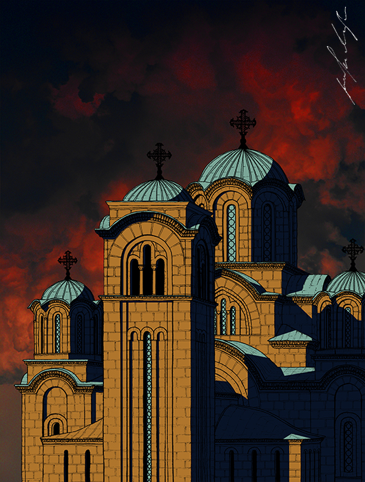

Sacred Architecture: Hand-drawn Illustrations of Serbian Churches and Monasteries by Jovana Radujko
jovana radujko
what i do
projects
contact
×
IN PROGRESS / Freehand drawings, ink on paper. Colored in Adobe Photoshop.
Manasija
Ravanica

Crkva Svetog Marka